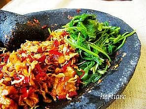

Sambal Tempe Teri

Bahan Sambal Tempe Teri :
- 150 gr tempe, potong tipis, goreng
- 4-5 sdm teri medan, goreng
- 4 cabe merah besar, buang biji, iris halus
- 1-2 sdt gula merah, sisir halus
- 1 sdm kecap manis
- 2 sdm minyak, untuk menumis
Bumbu Halus :
- 4 bawang merah
- 2 bawang putih
- 4 cabe merah keriting
- 1 sdt garam
Cara Membuat :
- Tumis bumbu halus hingga harum.
- Kemudian masukkan cabe iris, aduk sampai cukup layu.
- Tambahkan gula dan kecap, cicipi rasanya. Angkat.
- Tuang bumbu yg telah ditumis ke dalam ulekan.
- Tambahkan teri dan tempe yang telah digoreng.
- Kemudian ulek kasar hingga tercampur.
- Sajikan bersama sayuran rebus.